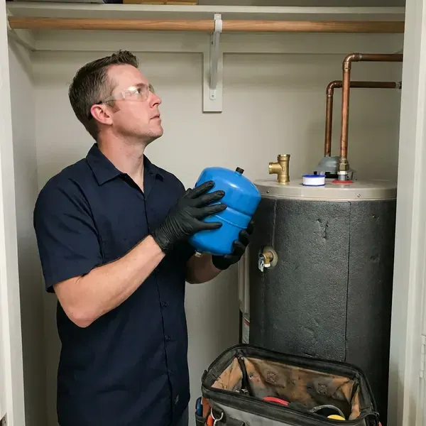

Water Heater Expansion Tank Installation in Lafayette, CO
Dripping relief valve or banging pipes in Lafayette, CO? A correctly sized expansion tank often fixes the problem in under two hours.
- Same-Day Installs
- Precharged to Your Pressure
- Code-Compliant Mounting
- Licensed Plumbers

Protect Your Tank and Fixtures With an Expansion Tank in Lafayette, CO
Call GFR Plumbing and we will check your pressure first.
Licensed Expansion Tank Installers in Lafayette, CO
GFR Plumbing puts expansion tanks on closed systems, where pressure has no way back to the main. That closed loop usually comes from a PRV, check valve or backflow device, and once it exists, the water heater needs a place for expanded water or it will push the relief valve open. The relief valve starts to drip.
Work we handle every week:
- Protecting heaters and pipes from pressure spikes
- Compliance with local code
- Code-compliant tank mounting

Additional Plumbing Installation Services in Lafayette, CO
We install water heaters, pumps, lines, and fixtures across Lafayette, CO with precision workmanship that meets every local code.


Customers
Why Choose GFR Plumbing for Water Heater Expansion Tank Installation in Lafayette, CO?
Code compliance is only part of the reason. The real payoff is a heater and plumbing that last, since constant pressure swings wear out components faster than age alone, and a correctly charged tank evens those swings out every single cycle. You will not notice it working.
- System Protection, The tank takes up the extra volume from heating, so your heater and pipes are not strained.
- Properly Supported, Tanks are strapped or bracketed so their weight never hangs on the pipe.
- Measured Pressure, We test static pressure and set the precharge to match.
Citywide Coverage
Pressure regulators are common throughout Lafayette, and every one of them creates a closed system. We serve every part of the area, and we check the regulator's output on every expansion tank job, because a regulator set too high makes the tank work harder than it should. A quick adjustment often helps.
Experienced Team
Tight closets and attic platforms do not slow our plumbers down. They know how to fit a tank without straining the piping, using a short nipple and a bracket when the wall is close, or a horizontal mount where the manufacturer allows it. Each brand lists its approved positions.
Safety-First Approach
Careful installation prevents the hazards that come with high pressure. Every connection gets leak checked under full house pressure, and we confirm the relief valve still works, because the expansion tank lowers pressure but the T and P valve is still the last line of defense. Each one has its job.
Trusted Certified Lafayette Plumbing Services Professionals
At GFR Plumbing, we take pride in licensed, certified plumbing services throughout Lafayette, CO. Those papers on the wall mean something. Our plumbers hold recognized industry credentials, and they follow strict safety and quality rules on every repair, installation and maintenance call we run.
Call Us Now PHCC Plumbing Contractor Recognition
PHCC Plumbing Contractor Recognition Better Business Bureau (BBB) Accreditation
Better Business Bureau (BBB) Accreditation Angi Certified Pro
Angi Certified Pro ISO 9001 Quality Management Certification
ISO 9001 Quality Management CertificationExpansion Tank Sizing and Installation in Lafayette, CO
Residential Expansion Tank Installation in Lafayette
Closed systems are the reason most homes in Lafayette need an expansion tank. Once a PRV or meter check valve is in place, heated water cannot push back into the main, so every heating cycle raises the pressure in your pipes until something gives. The T and P valve drips first.

Expansion Tank Replacement in Lafayette, CO
The bladder or diaphragm inside the tank is what fails. After it tears, water floods the air side, the tank goes heavy, and the pressure spikes come right back, so we replace the tank with a correctly sized unit and check the precharge before it goes on the line in Lafayette, CO. They do not repair well.
Preventative Expansion Tank Maintenance in Lafayette, CO
Air precharge leaks down slowly over the years, like a bike tire. A quick check during water heater service catches it, and with the water pressure relieved we top the charge back up to match your house pressure, then look over the fittings and the strap in Lafayette, CO. Low charge means short life.
Tank Sizing and Placement in Lafayette
Sizing comes down to heater volume, supply pressure and water temperature. We plug those into the manufacturer chart, then mount the tank on the cold inlet near the heater, in a spot you can reach later, because the precharge needs checking and the tank will eventually need replacing in your Lafayette home. Reachable tanks are cheaper to service.
Pressure Reducing Valve and Expansion Tank Pairing in Lafayette
Pressure reducing valves are common, and they protect fixtures from high street pressure. They also turn your plumbing into a closed system, so we test the PRV output, replace it if it is creeping, and pair it with a correctly charged expansion tank so pressure stays steady throughout the house in Lafayette. Old PRVs often creep up.
Commercial Expansion Tank Solutions in Lafayette, CO
Commercial water heaters move far more water, so the expansion volume is bigger too. We size the tank to the full system volume, storage tanks included, then floor-mount it with proper supports and schedule the install around your business hours in Lafayette, CO. Hot water stays on as long as possible.
Commercial and Multi-Unit Expansion Tanks in Lafayette
Apartment buildings and offices with several heaters need tanks sized for the whole hot water system. We include storage tanks and recirculation loops in the math, floor-mount the larger tanks with proper supports, and plan the work to keep hot water interruptions short for tenants in Lafayette, CO. Weekend work is available.

Expansion Tank for Tankless Water Heaters in Lafayette, CO
Recirculation pumps keep hot water in the lines, which means more heated water and more expansion. On tankless systems with a recirc loop, we often add a small tank, especially in Lafayette, CO homes with a PRV or a meter check valve that already closed the system. We only recommend it when it helps.
Water Heater Expansion Tank Installation Near Me in Lafayette, CO
Our plumbers work in Lafayette every day and know how local water pressure and regulators affect heaters. That experience lets us size the tank correctly the first time, and you get a quick, clean install and a system that stays balanced long after we leave. Balanced pressure is the goal.
Expansion tank work near you in Lafayette, CO comes from a local crew. Response times stay short across the area, and since most installs take an hour or two, we can often fit yours in the same day you call, especially if the relief valve is already dripping. Dripping valves get priority.
GFR Plumbing at a Glance
- Fully licensed plumbing team covering Lafayette, CO
- Same-day appointments and 24/7 emergency response
- Clear written estimates, no hidden fees
- 4.8-star rated by 750+ Colorado customers
Lafayette Map
Lafayette Information
- Population
- 30,439
- Area codes
- 303/720/970
- Service area
- Lafayette and communities within 40 miles
- Nearby
- Broomfield, Westminster, Boulder, Thornton
High incoming water pressure and widespread pressure regulators make thermal expansion a real issue for water heaters in Lafayette, CO, and a properly charged expansion tank keeps that pressure in check.
Expert Services
Reach out to GFR Plumbing for reliable plumbing work done by licensed pros in Lafayette, CO.
Our Specialized Plumbing Services in Lafayette, CO
At GFR Plumbing, you get every kind of plumbing service from one company across Lafayette, CO. From leak detection to full system installs, our team works fast and charges fair prices on homes and commercial properties alike. Take a look at our core services below:


How We Install Expansion Tanks in Lafayette, CO
Expansion tank installs are short, and we keep the mess to a minimum in Lafayette.
Request a Quote
Call (720) 727-9398 and tell us about your water heater and any symptoms like a dripping relief valve. We give you an honest price.
Test and Size
We measure static pressure, check the PRV and relief valve, and pick the tank. The air charge is set to match your pressure.
Install and Verify
We install and support the tank on the cold supply, then run the heater through a cycle. Pressure has to stay stable.
Frequently Asked Questions About Water Heater Expansion Tank Installation in Lafayette
Most installs in Lafayette run $250 to $500, parts and labor included. Tank size and access are the main variables, along with any piping changes, so an attic heater or a tight closet with no room for a tee costs a little more than an open garage install. We quote before we start.
Permit rules vary in Lafayette, and they often depend on whether the tank goes in with a new water heater. Standalone tanks usually do not need one, but we check the local rules and advise you before work starts, and when it is part of a heater replacement the permit covers both. We handle the paperwork.
Most tanks last 5 to 10 years. Many larger systems in Colorado draw on mountain snowmelt that runs fairly soft, while plains communities and groundwater sources often deliver more mineral-heavy water. Water quality, pressure and install quality all affect that range, and a check during water heater service will catch a failing tank before the relief valve starts dripping. Undercharged tanks fail first.
Closed plumbing systems need somewhere to put expanded hot water. A missing tank lets thermal expansion damage the heater and fixtures, leading to leaks and early failure, and plenty of local codes in Colorado require a tank for that reason. The tank itself is small.
Water spitting from the air valve is the clearest sign. Rust on the shell, banging pipes or fluctuating pressure can also point to it, since all of those show up when the tank stops absorbing expansion and pressure starts climbing again. A tap test helps confirm it.
Most standard installs finish in one to two hours. Bigger pipe changes can add time, especially if the cold supply needs rerouting to make room for the tee, and we keep the disruption to your hot water as short as we can. You have hot water by evening.
We install potable-rated tanks from Watts, Amtrol and A.O. Smith. Each is approved for drinking water and has corrosion-resistant connections.
A standalone tank usually does not need a permit, though one is often included when it goes in with a new water heater. Local requirements get followed on every job.
What People Are Saying About Our Plumbing Experts?

Sofia M.
Two new toilets went in during one visit. The tech set them on new wax rings and swapped the old supply lines. He also noticed our bathroom faucet dripping and replaced the cartridge while he was there. No mess left behind.
Toilet Installation · Boulder, CO
Brian W.
I smelled gas behind the dryer and called right away. The plumber found a corroded flex connector, replaced it, and pressure tested the whole line before turning the gas back on. He let me watch the gauge hold steady for fifteen minutes.
Gas Line Repair · Boulder, CO
Marcus H.
Grease from the fryer line kept clogging the kitchen drain at my diner. GFR Plumbing hydro jetted the line after closing, showed me the buildup on camera, and set us up on a quarterly cleaning so it does not catch us on a Friday again.
Drain Cleaning · Thornton, CO
Patricia H.
We had a slab leak that two other companies could not find. GFR Plumbing located it in under an hour with a listening device. They rerouted the line through the attic instead of breaking up the floor, so we kept our kitchen tile.
Slab Leak Repair · Thornton, COLaura S.
Our 40 gallon tank started leaking from the bottom after thirteen years. The tech hauled the old one out, set a new unit with a fresh expansion tank, and had hot water running in about four hours. He took the old tank with him too.
Water Heater Replacement · Lafayette, CORobert G.
The camera showed a full break in our clay sewer line near the street. GFR Plumbing replaced it with a trenchless pipe burst, so the only digging was two small pits in the yard. They let us watch the footage before and after.
Sewer Line Replacement · Broomfield, CO